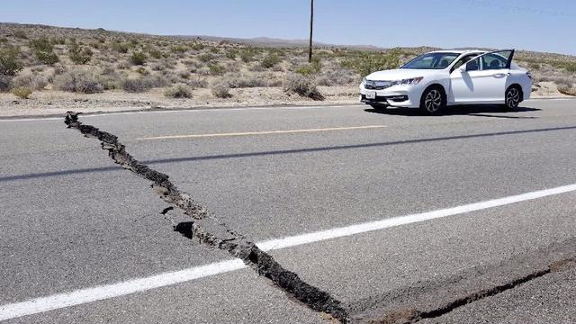

Gempa Bumi
Gempa Bumi adalah getaran atau getar-getar yang terjadi dipermukaan bumi akibat pelepasan. Gempa bumi diukur dengan menggunakan alat Seismometer. Skala Ritcher adalah skala yang dilaporkan oleh obsevatorium seismologi nasional yang diukur pada skala besarnya lokal 5 magnitude. Intensitas getaran diukur pada modifikasi Skala Mercalli.
Syarat Gempa yang Berpotensi Tsunami
Gempa bisa berpotensi menjadi tsunami jika pusat gempa berada di dasar laut dengan skala yang besar dan kedalaman yang rendah (lebih dari 7 SR dan kurang dari 70 km).
Intensitas Gempa Di Dunia
Pusat Informasi Gempa Nasional (NEIC) mencatat rata-rata 20.000 gempa bumi setipa tahun (sekitar 50 hari) di seluruh dunia. Namun, ada jutaaan gempa yang diperkirakan terjadi setiap tahun yang terlalu lemah untuk dicatat. Gempa yang berskala 3 tidak akan dapat manusia rasakan, sementara gempa berskala 6 sudah cukup menimbulkan kerusakan.

10.000 Gempa di California Selatan
Setiap tahun wilayah California Selatan memiliki sekitar 10.000 gempa bumi, yang sebagian besar tidak diketahui. Namun, jika ada gempa besar, gempa susulan akan terjadi lebih banyak dengan bermacam besaran selama berbulan-bulan.
80% Gempa Terjadi di Tepi Samudra Pasifik
Hampir 80% dari semua gempa bumi terjadi di sepanjang tepi Samudra Pasifik, yang disebut "Cincin Api", sebuah wilayah yang mengelilingi Samudra Pasifik dan merupakan rumah bagi 452 guunug berapi (lebih dari 75% gunung berapi aktif).
Gempa Bumi dengan kekuatan Terbesar
Sementara gempa terbesar di dunia yang pernah tercatat adalah sebesar 9,5 skala richter di Chile pada 22 Mei 1960. Ketika gempa Chile terjadi, seismograf mencatat gelombang seismik yang melintas di seluruh dunia. Gelombang seismik ini mengguncang seluruh bumi selama beberapa hari.